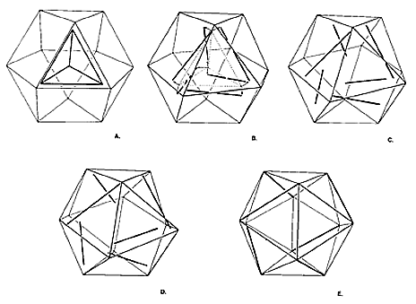

|  |
| Fig. 938.13 Six Vectors of Additional Quantum Vanish and Reappear in Jitterbug Transformation Between Vector Equilibrium and Icosahedron: The icosahedral stage in accommodated by the annihilation of the nuclear sphere, which in effect reappears in transformation as six additional external vectors that structurally stabilize the six "square" faces of the vector equilibrium and constitute an additional quantum package. (See also color plate 7.) |